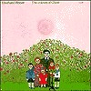
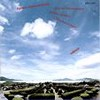
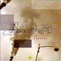
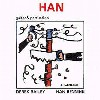

strange music page
overseas * * * avant-garde/jazz
#えーとフリージャズとかアヴァンギャルドとか。
あまり熱心に聴いて無くって、ちょっと興味有ったら捜してみるくらい。
E.Weberのはすっげー奇麗な音楽ですね、あと最近のM.Karn好き。よく見るとECMとCMPばっか。
ちょっと多くなってきたんでニッティングファクトリー系分けました。
|
- Tamia - Pierre Favre
- Eberhard Weber
- Egberto Gismonti
- Claude Barthelemy
- Mick Karn
- J.Kuhn,M.Nauseef,T.Newton,M.Tadic
- Polytown
- Mark Nauseef & Miroslav Tadic
- Han Bennink & Derek Bailey
|
#えーっと、随分前から気になって捜しまわっていたボイスパフォーマーのTamiaのCDです。ほんとーは最初の頃のが聴きたかったんですけど、どーもCDにはなっていないようなので断念。今更LP捜しまわる気力もちょっとないので。(でも「どっかで見かけた」とか「売ってもイイ」とか「捨てるとこだった」とか言う方いたらメールください、ヲネガイシマス)
んで、このアルバムは88年のP.Favreさんとのデュオ。一音一音の"響き"がよく聞こえてくるような静かなアルバムです。TAMIAさんの声は楽器みたいだったり、ノコギリを叩いた音みたいだったり、子守唄みたいだったりと様々な色を見せます。声の使い方という事では同じ女性のボイスパフォーマーのDiamanda Galasを想像させるような瞬間もありました。Diamanda Galas程過激では無いですけど、共通点は有るみたい。
P.Farveの音も初めて聴いたんですけど、"間"を生かすようなちょっと雅楽みたいな感覚の有るパーカッションの音。
ちょっと毛色は違うんですが静寂の音ということで
日本のシノラマみたいな感覚も。
あまり万人に薦められるアルバムではないんですけど....例えば、何の騒音も無いような真夜中に耳を澄ますと聞こえてくるような音に何かを感じるような人には是非。(2000.7.22)
- Ballade
- Wood Song
- Maroua
- De la nuit...le jour
- Mit Sang und Klang
- Yemanja
- Tamia (voice)
- Pierre Favre (percussions)
ECM RECORDS: ECM-1364 (1988)
#渋谷のYELLOW POPにて偶然見つけたんで買っちゃいました。Eberhard Weberの1枚目みたいです。1974年。
1曲目の和声感とかが板倉文さんのサントラみたいに聞こえてきちゃいます（というか本当は逆なんだろうけど）soft machine後期のミニマルな感じとか、室内楽みたい所とかもかなり私好みです。
最後の長い曲とかはちょっと時代を感じさせるような部分もあるんですけど、色々な楽器をフレーズを少しずつ重ね合わせて行く所とかなんて最近の音を聴いてるような錯覚に気分にもさせられます。
タワレコとかのポストロックの所に混ぜておいても絶対バレないかと。ウソだと思うなら
試聴を。(2001.12.30)

- More colours
- The colours of Chloe
- An evening with Vincent van Ritz
- No motion picture
produced by Manfred Eicher
- Eberhard Weber (bass,cello,ocarina)
- Rainer Bruninghaus (piano,synthesizer)
- Peter Giger (drums,percussions)
- Ralf Hubner (drums on 2.)
- Ack van Rooyen (flugelhorn)
POLYDOR POCJ-2815 (original release 1974 - ECM)
#綺麗なアルバム、1曲目から女性コーラスとヴィブラフォンで盛りあがっていきます。雲の切れ間から光が降ってくるよな。なんだかとても柔らかな感触のCDです。
あとギターがBill Frisellなんですよね、私は
J.Zorn/拷問天国でB.Frisellを知ったので、このギャップはちょっと可笑しいです。

- Quiet Departures
- Fluid Rustle
- A Pale Smile
- Visible Thoughts
- Bonnie Herman (voice)
- Norma Winstone (voice)
- Gary Burton (vibraharp,marimba)
- Bill Frisell (guitars,balalaika)
- Eberhard Weber (bass,tarang)
ECM RECORDS: ECM-1137 (1979)
#以前ココの掲示板でちょっと話題になったEberhard Weberです、気になったので買ってみました。とても...静的な音です、確かにKILLING TIMEの"日没"とか好きなら気に入る音かも。夜明けを感じさせるような、繊細な...でも暖かみのある音です。
最後の曲はジワジワと盛り上がってきて、ホーンが印象的な旋律を奏でて「来たー」とか思った瞬間に終わっちゃいます。ちょっとやられた感じ。
- Maurizius
- Death In The Carwash
- Often In The Open
- Later That Evening
all compositions by Eberhard Weber
- Paul McCandless (soprano sax,oboe,english horn,bass clarinet)
- Bill Frisell (guitars)
- Lyle Mays (piano)
- Michael DiPasqua (drums,percussions)
- Eberhard Waber (bass)
ECM RECORDS: ECM-1231 (1982)
#ブラジルの人、このアルバムは余り好きじゃないかも。電子音やらギターやらのごちゃっとした感じ。
- O Trenzinho do Caipira
- Dansa
- Bachiana No.5
- Desejo
- Cantiga
- Cancao do Carreiro
- Preludio
- Pobre Cega
EMI RECORDS: 364-748145-2
#E.Gismontiの1978のECMからのアルバム。なんだかライナーには"dedicated to Spain and the Xingu Inidians..."とか書かれてます、ブラジルのインディアンに捧げるって事ですかね？
TERM CAIPIRAだけ昔買ったんですけど、なんだかあのアルバムの大仰さが合わなくって、ジスモンチはしばらく遠慮してたんですけど......こないだ下のパスコアル買うときに色々
CDNOWとかで試聴してて良さげだったんで買っちゃいました。
2曲目のタブラとギターの緊張感とかも格好良いんですけど、5曲目のJ.Gabarekのサックスが。なにか日が沈んでいくような感じのゆっくりした緊張感、KILLING TIMEにも似たような。

- Palaclo De Pinturas
- Raga
- Kalimba
- Coracao
- Cafe
Sapain
Danca Solitaria No.2
Baiao Malandro
- Egbertro Gismonti (piano on 4.)(8-string guitar on 1.2.5.)(kalimba,wood flute on 3.)
- Collin Walcott (tabla on 1.)(bottle on 5.)
- Nana Vasconcelos (berimbau on 3.5.)(percussions on 2.3.5.)(voice on 5.)
- Ralph Towner (12-string guitars on 1.5.)
- Jan Gabarek (soprano sax on 5.)
ECM RECORDS: ECM-1116 (original release 1978)
#これは割と最近・・・91年のリリースです。「A fala da paixao」とかすっげー綺麗な曲です。他の曲も確かにイイんだけど、ちょっと親しみにくい感じもします。ちょっと高尚かな？

- Ensaio de escola de samba (Danca dos Escravos)
- 7 Aneis
- Meninas
- Infancia
- A fala da paixao
- Recife & O amor que move o sol e outras estrelas
- Dance No.1
- Danca No.2
- Egberto Gismonti (piano,guitars)
- Nando Carneiro (synthesizers,guitars)
- Zeca Assumpcao (bass)
- Jacques Morelenbaum (cello)
EMC RECORDS: ECM-1428 (1991)
#ディスクユニオン渋谷ジャズ館、なんだかスゴイ音がかかってたんで買っちゃいました。「今かかってるコレ下さい」ってやつで。
アレアとザッパと渋さ知らズをごちゃ混ぜにしたよーな1曲目がかっちょいいです。とてつもなく。
その後はトラッドっぽい曲とかチェンバーみたいなのとか変態フュージョンとか何でもアリアリの世界でした。
どーもフランスのジャズの人みたいですね、全然フランスっぽくないけど。(2002.2.25)

- Munir
- Vieira da Silva
- Sereine
- Barthematiques
- Rene Thom / Rene Thomas
- Cancao para ti
- Le travail des elephants
- Borneo
- Syracuse
- Elles font les ils
- Jacques Mahieux (drums,percussions)
- Nicolas Mahieux (cotrabass,double bass)
- Didier Ithursarry (accordion)
- Frank Tortiller (vobraphoe,marimba)
- Claude Barthelemy (guitars)(bass on 2.)(piano on 2.)(carignan on 2.)
- Elise Caron (vocals on 6-9.)
- Mederic Collignon (voice on 1.)(cornet)
- Philippe Lemoine (soprano sax,alto sax)
- Jean-Louis Pommier (trombone)
- Bojan Zulfikarpasic (Pacha Zulfikar on 1.)(piano on 3.)
crepuscule au japon: LBLC-6631J (2002)
- Bestial Cluster
- Back In The Beginning
- Beard In The Letterbox
- The Drowing Dream
- The Sad Velved Breath Of Summer And Winter
- Saday, Maday
- Liver And Lungs
- Bones Of Mud
- Mick Karn (fretless bass,clarinet,sax,keyboards)
- David Torn (guitars,mandolin,banjo,keyboards)
- Steve Jansen (drums,congas)
- Richard Barbieri (keyboards,programming)
- Joachim Kuhn (keyboards on 1.)(piano on 2.)
- Ed Mann (percussions on 2.)
- Glen Velez (drums on 2.)
- David Liebman (soprano sax on 3.7.)
- Jurgen Kernbach (bassoon on 6.)
- Mario Argandona (vocals on 6.)
- Walter Quintus (violin on 7.)
JIMCO RECORDS: JICK-89701 (original release CMP RECORDS)
- Thundergirl Mutation
- Plaster The Magic Tongue
- Lodge of Skins
- Gossip's Cup
- Feta Funk
- The Tooth Mother
- Little-less Hope
- There Was Not Anything But Nothing
- Mick Karn (bass,vocals)
- David Torn (guitars)
- Gavin Harrison (drums,percussions)
- Jakko Jakszyk (flute,tenor sax,guitars on 4.7.8)(keyboards,programming)
- Natacha Atlas (vocals on 1.3.5.)
- Gary Barnacle (flute)
- Steven Wildoson (guitars on 1.2.)
- Richard Barbieri (synthesizers on 1.)(programming on 5.)
- Sabine Baaren (backing vocals)
- Christina Lux (backing vocals)
- Sureka Kothari (voice on 6.)
#地元(元住吉)の中古屋さんで\880、面子が面白そうだったので買って見ました。フリー系の硬質なジャズロックかな。
- The Prophet
- Senegal
- Avant Garage
- Mali Mis Zubonja
- Plums
- Skrga
- Always Yours
- Something Sweet, Something Tender
- The Captain And I
- Heavy Hanging
- Don't Disturb My Groove
- Snake Oil
- Bintang
- Kissing The Feet
- Joachim Kuhn (keyboards,piano)
- Mark Nauseef (percussions)
- Tony Newton (bass)
- Miroslav Tadic (guitars)
CMP RECORDS: CMP-CD-53 (1991)
#D.Torn + M.Karn + T.Bozzioという組み合わせ、やっぱりセッション風のアルバムです。メンツがメンツなだけに全然JAZZっぽく無いです、CMPにしてはロック色の強いセッションアルバム、D.Tornの色が結構出てるかな?
高校の頃に先輩から売ってもらったアルバムです、久々に聴いて見てますけど.....全然懐かしく無いのはなんででしょうかね?えーと3人中の2人好きだったら買っても良いとおもいます。アルバム的には
Bestial ClusterとかのM.Karnのソロ名義の方が好きですけど。
- Honey Sweating
- Palms for Lester
- Open Letter to the Heart of Diaphora
- Bandaged by Dreams
- Warrior Horsemen of the Spirit Thundering over Hills of Doubt to A Place of Hope
- Snail Hair Dune
- This is The Abduction Scene
- Red Sleep
- Res Majuko
- City of The Dead
- Mick Karn (bass,bass clarinet,dida,voice)
- David Torn (guitars,loops,keyboards,harmonica,tiny piano,voice)
- Terry Bozzio (drums,percussions,bodhram,dumbek)
JIMCO RECORDS: JICK-89726 (1990 - original release CMP RECORDS)
#M.Nauseefって人、良く知らない....M.Tadicはもっと知らないです。
ライナーによると、M.Nauseefはvelvet undergroundにも参加した事があるみたいです、ELFとかTHIN LIZZYとかHR系での活躍が多い人みたいです。
1曲目、なんだかとても格好良いです。他の曲は.....うーんアルバム通して聴くと散漫な感じがしちゃいます、割と面白い音出してると思うんですけど。ちょっと色々な要素が混じりすぎかも、イマイチ。
- Lizard on A Hot Rock
- The Wind Cries Mary
- Peacock on A Hot Rock
- Rope Ladder to The Moon
- Amarcord
- Who are The Brain Police?
- Hamburg2
- All Souls Day
- Amarcord
- Trio
- Walls of The Vortex
- Fourths
- Mark Nauseef (drums)
- Miroslav Tadic (guitars)
- Jack Bruce (harmonica on 1.)(vocals,bass on 2.4.)
- David Torn (guitars on 2.4.6.11.)
- Wolfgang Puschnig (hojak on 3.5.)(alto sax on 6.)
- Markus Stockhausen (trumpet on 3.5.6.11.)
- Walter Quintus (digitalia on 11.)
JIMCO RECORDS: JICK-89732 (1994 - original release CMP RECORDS)
#デレクベイリーとハンベニンクの即興デュオ。ほんとは即興演奏って盤になったものにはほとんど興味無いんですけど。
でもコレは、前ハンベニンクを生で見てちょっと衝撃を受けたので、ちょっと聴いてみたくなって購入。ジャケットも良かったし。
1986年の録音みたいです、とにかくハンベニンクのドラムが圧倒的な感じで。要所要所で合わせてきてテンションを高くするデレクベイリーも流石ｋなーと思いますけど、やっぱりハンベニンク。でもカタカナで書くとなんか新しい食べ物みたい。(2002.2.25)

- Melancholy Babes, part 1
- Melancholy Babes, part 2
- Derek Bailey (guitars)
- Han Bennink (percussions)
INCUS: CD-02 (1986)